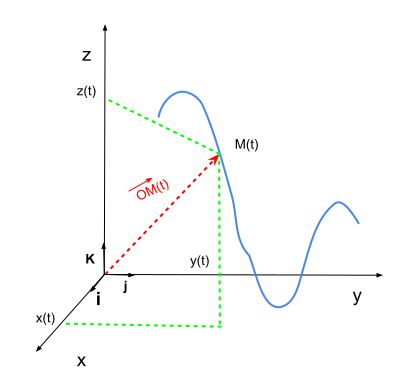
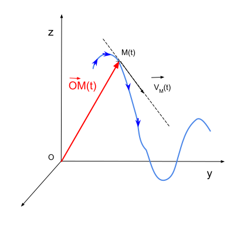
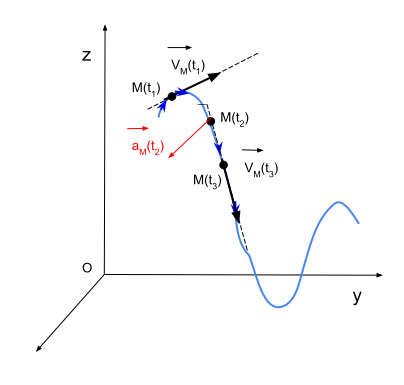
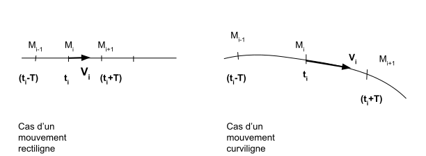
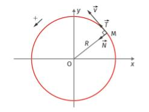

La cinématique est l'étude d'un mouvement au cours du temps. Le mouvement d'un objet est caractérisé par sa trajectoire et sa vitesse. Avant d'étudier ce mouvement, il faut définir un référentiel d'étude.
Le référentiel d'étude est le cadre de référence choisi par l'observateur pour décrire le mouvement d'un objet. Il est crucial de définir un référentiel d'étude avant d'analyser tout mouvement.
Imaginons une voiture roulant sur une route rectiligne à vitesse constante. En prenant un arbre au bord de la route comme référentiel d'étude, la trajectoire de la voiture apparaît comme une ligne droite horizontale.
Les éléments essentiels associés à un référentiel d'étude sont :
Le vecteur position (\( \vec{OM}(t) \)) représente la position d'un point mobile (M) le long d'une trajectoire à un instant \( t \), par rapport à l'origine (O) du repère associé au référentiel d'étude.
Le vecteur vitesse (\( \vec{VM}(t) \)) d'un point mobile (M) à l'instant \( t \) est la dérivée temporelle du vecteur position. Il représente la vitesse et la direction du mouvement à cet instant.
Les caractéristiques du vecteur vitesse sont :
Le vecteur accélération (\( \vec{aM}(t) \)) d'un point mobile (M) à l'instant \( t \) est la dérivée temporelle du vecteur vitesse. Il représente la variation de la vitesse par rapport au temps.
Les caractéristiques du vecteur accélération sont :
L'enregistrement du mouvement, c'est-à-dire le relevé de la position et de la vitesse, est le fondement de l'étude cinématique.
Considérons l'enregistrement suivant. L'intervalle du temps qui sépare deux intervalles du temps est \(T\).
La vitesse et l'accélération sont données par :
\[V_i=\frac{M_{i-1}M_{i+1}}{2T}\] \[a_i=\frac{V_{i+1}-V_{i-1}}{2T}\]
Le mouvement est rectiligne si la trajectoire est une droite. Dans un mouvement rectiligne, le vecteur vitesse et le vecteur accélération sont colinéaires. Les mouvements rectilignes sont qualifiés différemment en fonction du vecteur accélération :
Si \(aM(t)=0\), le mouvement est rectiligne uniforme.
Si \(aM(t)\) est constante, le mouvement est rectiligne uniformément accéléré.
Un mouvement est dit circulaire lorsque la trajectoire suivie par le point mobile est un cercle. Dans un mouvement circulaire, le vecteur accélération est toujours dirigé vers l'intérieur de la trajectoire. Les mouvements circulaires sont qualifiés différemment en fonction des vecteurs vitesse et accélération :
Si la norme de la vitesse \(v\) est constante, le mouvement est circulaire uniforme.
Si \(aM(t)\) est constante, le mouvement est circulaire uniformément accéléré.
Le mouvement rectiligne uniforme (MRU) est un type de déplacement où un objet se déplace en ligne droite avec une vitesse constante.
Dans un MRU, la vitesse de l'objet reste constante au fil du temps, ce qui signifie que l'objet parcourt des distances égales dans des intervalles de temps égaux.
L'utilisation du terme "rectiligne" indique que le mouvement se produit en ligne droite, sans changement de direction.
L'accélération dans un MRU est nulle (\(a = 0\)). Cela signifie que la vitesse de l'objet ne change ni en magnitude ni en direction.
L'équation horaire pour un MRU est donnée par :
\[ x = V_0 \cdot t + x_0 \]
Où \( V_0 \) représente la vitesse initiale et \( x_0 \) la position initiale de l'objet.
Un mouvement est rectiligne uniformément varié lorsqu'il a une accélération constante en valeur, en direction et en sens.
Vecteur accélération constant : \(a = \text{constante}\)
L'équation horaire de la vitesse : \(v = at + v_0\)
\(v_0\) : la vitesse initiale.
Remarques :
La position dans le cas du MRUV : \(x = \frac{1}{2}at^2 + v_0t + x_0\)
\(x_0\) : la position initiale
Équation indépendante du temps : \(v^2 - v_0^2 = 2a(x - x_0)\)
Un point a un mouvement circulaire lorsque sa trajectoire est un cercle ou une portion de cercle. Des exemples de trajectoires circulaires incluent les satellites orbitant autour de la Terre et les nacelles d'une grande roue.
Mouvement circulaire uniforme : la vitesse reste constante en norme au cours du temps.
Le vecteur vitesse est constant en norme, tangent au cercle de la trajectoire et orienté dans le sens du mouvement. Cela implique une dérivée non nulle du vecteur vitesse, donc une accélération non nulle.
Le vecteur accélération pointe toujours vers le centre du cercle (accélération centripète) avec une valeur égale à:
\[a=\frac{v^2}{r}\]où \(v\) est la vitesse (m/s) et \(r\) est le rayon du cercle de la trajectoire (m).
Les vecteurs associés aux accélérations normales et tangentielles sont exprimés avec le repère de Frenet. Ce repère, utilisé pour toutes les trajectoires curvilignes, a une origine mobile correspondant au point en mouvement et deux vecteurs unitaires:
Le vecteur normal est orienté vers le centre du cercle, tandis que le vecteur tangentiel est tangent à la trajectoire et orienté dans le sens du mouvement.
En utilisant le repère de Frenet, le vecteur accélération peut être exprimé comme suit:
\[a=a_n\vec{N}\]L'équation horaire est une équation sinusoïdale du type :
\[x=X_m\cos(\omega t+ \phi)\]C'est le mouvement, par exemple, d'une masse accrochée à un ressort.
La fonction cosinus varie entre -1 et 1., donc \(x\) oscille entre -\(X_m\) et \(X_m\).
La fonction cosinus est une fonction périodique de période \(2\pi\). Si \(T\) est la période temporelle du mouvement, alors :
\[\omega(t + T) + \phi - (\omega t + \phi) = 2\pi \Rightarrow T = 2\pi\]La fréquence \(f\) correspond au nombre d'oscillations (d'allers et retours) par seconde :
\[f = \frac{1}{T}\]La vitesse est obtenue en dérivant la fonction \(x(t)\) :
\(x= X_m \cos(\omega t + \phi) \quad v= \frac{dx}{dt} = - X_m \sin(\omega t + \phi )\)L'accélération est obtenue en dérivant la fonction \(v(t)\) :
\[v = \frac{dx}{dt} = -X_m\omega \sin(\omega t + \phi)\] \[a = \frac{dv}{dt} = -X_m\omega^2 \cos(\omega t + \phi)\]L'équation différentielle du mouvement est donc :
\[x^{''}+\omega^2 x = 0\]Ceci correspond à l'équation différentielle de l'oscillateur harmonique.